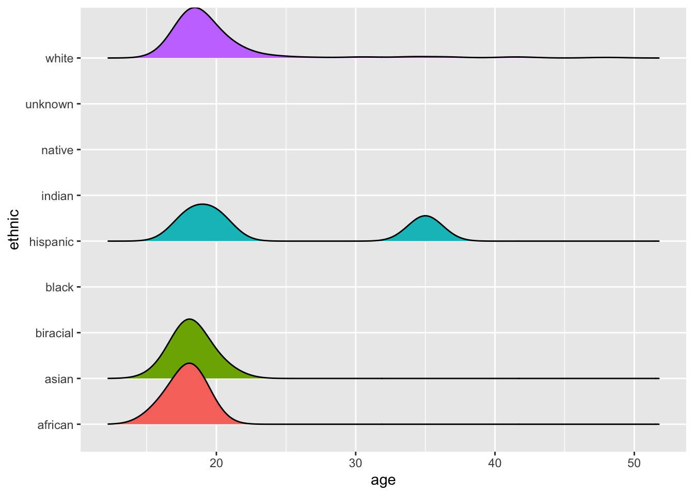
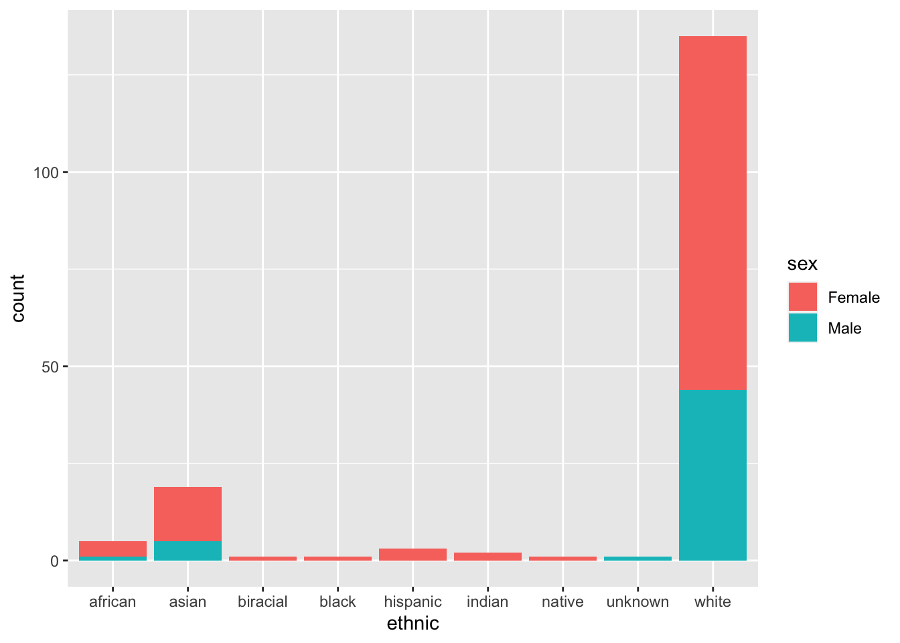

Show code
library(tidyverse)
library(here)
library(ggplot2)
library(ggridges)
hiphop <- read_csv(here :: here("datasets", "hiphop.csv"))
# spec(hiphop)library(tidyverse)
library(here)
library(ggplot2)
library(ggridges)
hiphop <- read_csv(here :: here("datasets", "hiphop.csv"))
# spec(hiphop)The “hiphop” dataset provides information on 168 students at the University of Minnesota and their “familiarity” with African American English (AAE). The data includes variables about the students’ demographics, social network and pop culture knowledge. There are 10,752 rows and 38 columns (variables) in the data; 4 character variables and 34 numeric.
The rows of the dataset represent each instance of testing an AAE word. Each word was tested 168 times (once for each student), so 168 x 64 words = 10,752 (the total number of rows).
Missing values for some of the variables were replaced with the mean value of that variable. The benefit to doing this is that we do not have to remove the observations with missing values and can use the information that we do have on them. The drawback to doing this is that it is not actually true and could change some answers.
#change all character variables to factors
hiphop_clean <- hiphop |>
mutate(across(where(is.character), as.factor))hiphop_clean |>
distinct(word, .keep_all = TRUE) |>
count()# A tibble: 1 × 1
n
<int>
1 64There are 64 unique words in the data.
#change "ethnic" to only two categories
hiphop_clean <- hiphop_clean |>
mutate(ethnic_class = if_else(ethnic != "white", "non-white", "white"))hiphop_clean |>
distinct(subj, .keep_all = TRUE) |>
select(sex, age, ethnic) |>
summary() sex age ethnic
Female:117 Min. :16.00 white :135
Male : 51 1st Qu.:18.00 asian : 19
Median :19.00 african : 5
Mean :20.02 hispanic: 3
3rd Qu.:20.00 indian : 2
Max. :48.00 biracial: 1
(Other) : 3 The demographics of the subjects in the data show that there are 117 females and 51 males. The youngest person surveyed was 16 years old, and the oldest was 48 years old but the average was around 20 years old. 135 of the subjects were white while only 19 were Asian, 5 were African, 3 were Hispanic, 2 were Indian, 1 was biracial, and 3 were “other”.
hiphop_clean |>
distinct(subj, .keep_all = TRUE) |>
ggplot(mapping = aes(x = age, y = ethnic, fill = ethnic)) +
geom_density_ridges(scale = 0.5) +
theme(legend.position = "none")Picking joint bandwidth of 1.26
hiphop_clean |>
distinct(subj, .keep_all = TRUE) |>
ggplot(mapping = aes(x = ethnic, fill = sex)) +
geom_bar() 
hiphop_clean |>
filter(age < 20) |>
group_by(word) |>
summarize(mean = mean(familiarity)) |>
slice_max(mean) # A tibble: 1 × 2
word mean
<fct> <dbl>
1 off the hook 4.42 #slice_min(mean)On average, the most familiar word for people below the age of 20 is “off the hook” and the least familiar word is “catch the vapors”.
hiphop_clean |>
filter(sex == "Female", ethnic_class == "non-white") |>
group_by(word) |>
summarize(mean = mean(familiarity)) |>
slice_max(mean) # A tibble: 1 × 2
word mean
<fct> <dbl>
1 feel me 4.19 #slice_min(mean)On average, the most familiar word for non-white females is “feel me” and there are 4 words that are all equally unfamiliar; they are break someone out”, “dukey rope”, “plex”, and “rollie”.
hiphop_clean |>
filter(sex == "Male", ethnic_class == "white", age > 30) |>
group_by(word) |>
summarize(mean = mean(familiarity)) |>
slice_max(mean) # A tibble: 1 × 2
word mean
<fct> <dbl>
1 5-0 4.2 #slice_min(mean)On average, the most familiar word for white males above the age of 30 is “5-0” and there are 25 words that all have a mean familiarity of only 1.
Finding Justin Bieber:
hiphop_clean |>
distinct(subj, .keep_all = TRUE) |>
filter(sex == "Male",
ethnic_class == "white",
age >= 17,
age <= 23,
city >= 10000,
city <= 60000,
bieber >= 5) |>
pull(subj)[1] p17
168 Levels: p1 p10 p101 p102 p103 p105 p106 p107 p108 p109 p11 p110 ... p99I believe subject “p17” is secretly Justin Bieber because they are the only white male between the ages of 17 and 23 from a town with a population between 10,000 and 60,000 who could name at least 4 Justin Bieber songs.
Through the feedback I received from professor Theobold I was able to improve my analysis of the data. I understand the importance of describing the data with both summary statistics and words so that the readers understand the context of the analysis. I also realized that when plotting data where each subject is not in an individual row, it may be helpful to make a transformation before plotting the data, and that it is important to plot what is requested (i.e., demographics).